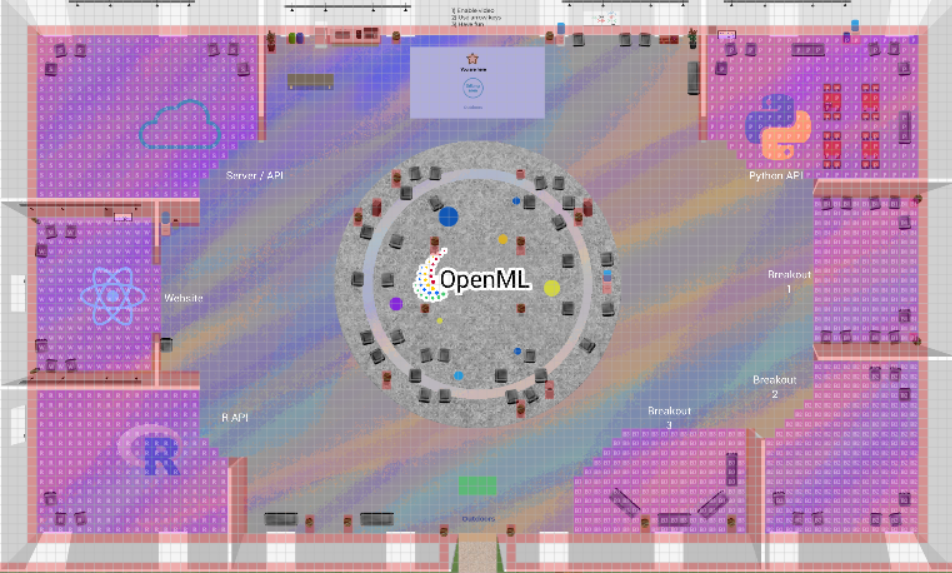
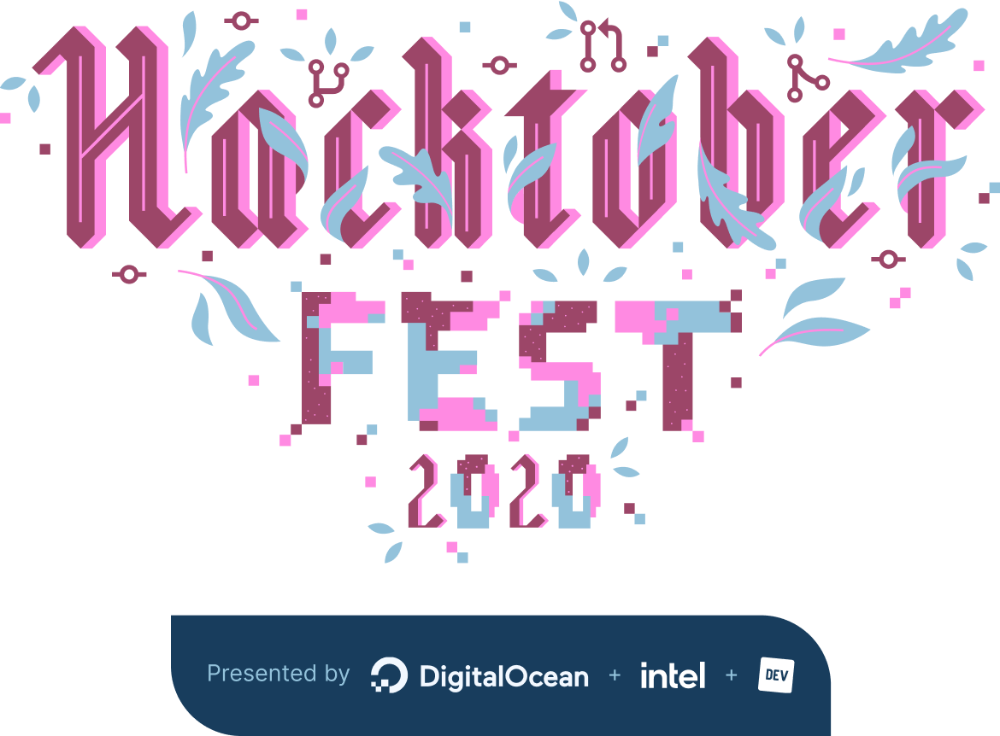

Twice a year the OpenML community organizes an OpenML workshop. Next week we will kick off our fall workshop, which will be hosted virtually and is open to everyone! At the workshop we work on the development and maintenance of the OpenML platform (website, APIs and extensions), but also encourage discussions on a broad range of topics, from using the platform to building the platform to building the community. If you are already sure you want to join, please register and we will see you next week!
The workshops are the perfect time to get involved with the OpenML community. We welcome first time contributors to the project. You can contribute in many ways, such as giving feedback, cleaning data, or helping with design, planning, or content. If you are looking to contribute to the software projects, we are there to help you get started on beginner issues. Even better, the workshop coincides with Hacktoberfest, which means you can earn a shirt through your open source software contributions! To get an even better idea of what happens at an OpenML workshop, read the write-up of last year’s fall workshop and look at the workshop agenda.
In this blog post we will go over the basics on how you can participate in the workshop. This includes pointers to our code repositories, the platform we will use (gather.town), and participating in Hacktoberfest.
Overview
Where? openml at gather.town
When? 26th through 30th of October 2020, 09.00-17.00 CET.
What? Discussions about OpenML, contributing to any OpenML project, or experimenting with OpenML.
Please register if you plan to join. It is not required to attend the workshop in full. You are free to join only for a day or specific discussions.
However, it is helpful to indicate which meetings you want to attend, so we know who to expect.
The workshop agenda is public. If you see a meeting which you would like to join, just add your name to the list. Feel free to propose a new meeting by adding a proposal to the meeting list!
Gather Town
This fall, we will host the OpenML Hackathon at our gather.town space. Gather.town is a web-based platform that allows you to video conference with other people, but with a twist. Rather than the conventional conference call, in gather.town you control an avatar that can navigate a virtual world. You will automatically be connected to anyone that is within the vicinity of your avatar. This means you can more organically join groups of people, or walk from one meeting room to the next. Here is a preview of our OpenML map: 
At a glance you see two types of areas: those marked with purple and those that are not marked. Areas that are not marked (e.g. the main lobby) function exactly as described above. However, whenever you are in a purple area you will automatically be connected to everyone else in the same purple area. So whenever you are interested in joining people discussing the new openml website, you just head over to that room!
Breakout Sessions
In the workshop agenda you will find various breakout sessions. These cover a wide range of topics, and we will briefly cover a few of them to give you an impression.
The Dataset Quality break-out session discusses what quality standards we want to uphold for datasets on OpenML. Ideally, we would like all our datasets perfectly annotated with a description of how the data was collected, what each features means, and what the feature types are. In reality, datasets are collected from different sources and often uploaded by someone other than the original creator. This leads to issues such as incomplete data, badly annotated columns, or multiple uploads of the same data.How can we ensure that despite these practical issues, it remains easy to find datasets of interest on OpenML? How can we improve the dataset quality of datasets uploaded to OpenML? How can we set these new standards and guidelines in a maintainable way? How can we automate annotation of attribute types to the dataset? How can we detect corrupt datasets before uploading it to server?
The Website Feedback break-out session is to discuss the newly designed OpenML website. We will appreciate any feedback on frontend, functionalities and limitations of the new openml website.
We recently discussed that OpenML wants to improve support for a wider range of datasets. For this reason we are moving away from the ARFF format. The Dataset Format break-out session discusses this transition. Our current plan is to migrate to parquet format, we will be discussing about limitations and advantages of new format and how can we integrate parquet to OpenML.
We welcome your participation in any these sessions.
And if you have an interesting topic we should discuss, feel free to submit your own breakout proposal!
Hacktoberfest
Hacktoberfest is a global event to support open source software. If you contribute “enough” to open source projects, you will also be eligible to receive a free t-shirt and some other swag! Our repositories welcome Hacktoberfest participation, so whenever you contribute to our repositories, you are working towards your Hacktoberfest goal. The rules are simple: - Sign up at Hacktoberfest with Github credentials - Find an issue you can help with (more on that below) - Submit a pull request resolving the issue - To be eligible for the t-shirt and swag, you must open four pull requests (this is the “enough” part)

You can browse our repositories and identify issues which you would like to work on. To make things easier, here are the list of openml repositories that are extra prepared for Hacktoberfest. These repositories have core developers registered to attend the workshop, and have marked issues which are suitable for newcomers with the hacktoberfest label.
- openml.org The front-end for the new OpenML! (python, React.js)
- OpenML The back-end for OpenML. (php)
- openml-python The Python API for interacting with the OpenML server. Please read this welcome message to get started. (python)
- docs Documentation for OpenML.
Please be sure to check the respective repositories contribution guidelines, and don’t be afraid to ask questions! We were all new to open source once and are happy to help you get started too. If you are just getting your feet wet with open source contribution, a great way to get started it to just try and use the packages/website. If you see documentation which needs clarification, or perhaps even just a simple typo, we appreciate your help in fixing it!
We hope to see you at our workshop!
If you have any questions about the workshop, feel free to leave a comment.